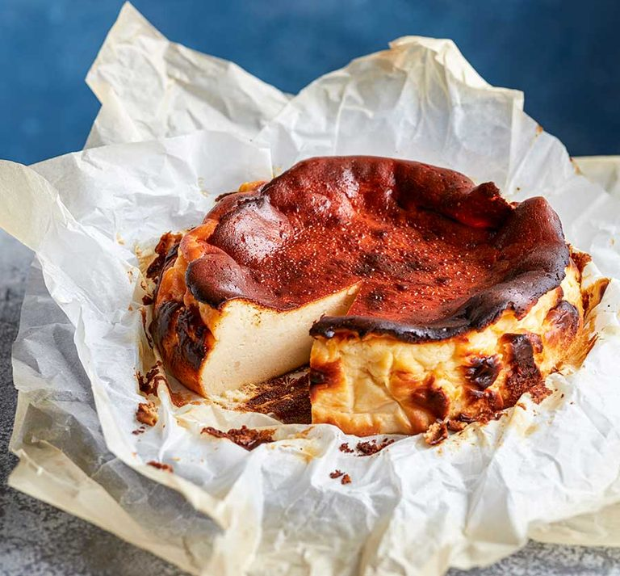

Burnt Basque Cheesecake
Home Page

Burnt Basque Cheesecake
The Burnt Basque Cheesecake is a crustless, creamy cheesecake known for its
deeply caramelized top and custard-like center. Originating from the Basque
region of Spain, it's intentionally baked at a high temperature to achieve
it's signature “burnt” look and rich flavor.
Inredients
- 600 g cream cheese (room temperature)
- 250 g granulated sugar
- 4 large eggs
- 300 ml heavy cream (double cream)
- 1 tsp vanilla extract
- 1 tbsp all-purpose flour (optional, for slightly firmer texture)
- Pinch of salt
Directions
- Preheat your oven to 210°C (410°F). Line a 9-inch (23 cm) springform pan with parchment paper, letting it overhang for easy removal.
- Beat the cream cheese and sugar together in a large bowl until smooth and creamy — about 2–3 minutes.
- Add the eggs one at a time, beating well after each addition.
- Pour in the heavy cream and vanilla extract, mixing until fully combined.
- Sift in the flour (if using) and add the pinch of salt, gently folding until smooth.
- Pour the batter into the prepared pan and tap lightly to remove air bubbles.
- Bake for 50–60 minutes, until the top is deeply browned and the center still jiggles slightly when shaken.
- Cool completely at room temperature, then chill for a few hours (or overnight) before serving.